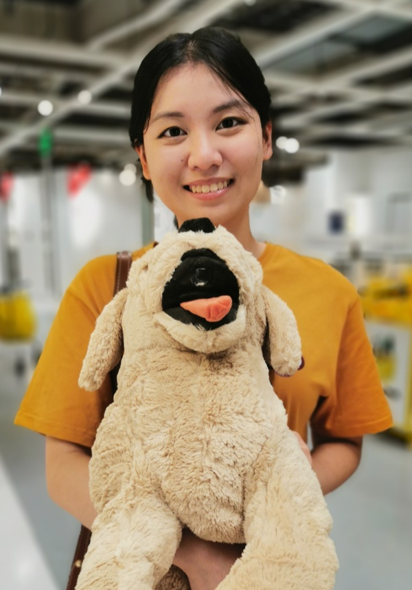
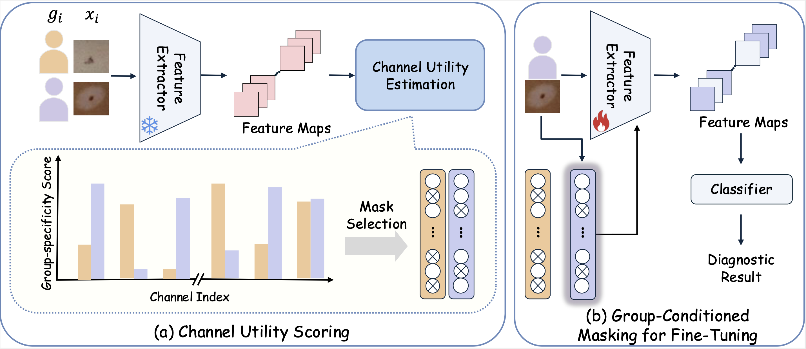

I am a fourth year Ph.D. candidate in the Department of Computer Science and Engineering at the University of Notre Dame, advised by Yiyu Shi. I received my B.Eng. degree from the Department of Computer Science and Engineering at the Southern University of Science and Technology (SUSTech), conducting research related to medical image analysis under the guidance of Jiang Liu at iMED.
I am currently a visiting graduate student at Weill Cornell Medicine, hosted by Fei Wang, and previously interned at Boston Children's Hospital and Harvard Medical School with Maimuna Majumder. I also work closely with Wei Jin at Emory University and Zhi Zheng at Notre Dame.
I develop machine learning algorithms that ensures reliable performance for specific patient populations through targeted data allocation, adaptation, and evaluation. My current work extends these methods to continually learning clinical AI and healthcare agents.
I am currently on the academic job market. Please feel free to reach out if you know of any suitable opportunities!
Selected Publications
(* indicates equal contributions)Assessing the Use of Automatic Speech Recognition and Large Language Models for Individuals with Language Impairments
Gelei Xu*, Haoxinran Yu*, Lixuan Wei, Yuxuan Liu, Dancheng Liu, Chenhui Xu, Jiajie Li Ahmed Abbasi, Jinjun Xiong, Xiufan Yu, Zhi Zheng, Yiyu Shi, and Ruiyang Qin

Group-Conditioned Representation Modulation for Fair Skin Disease Diagnosis
Gelei Xu*, Haoran Fan* and Yiyu Shi

A Comprehensive Survey of AI Agents in Healthcare
Gelei Xu*, Xueyang Li*, Yixiong Chen*, Yuying Duan*, Shuqing Wu*, Alexander Yu*, Ching-Hao Chiu*, Juntong Ni*, Ningzhi Tang, Toby Jia-Jun Li, Alan Yuille, Wei Jin, and Yiyu Shi
Rethinking Fairness in Medical Imaging: Maximizing Group-Specific Performance with Application to Skin Disease Diagnosis
Gelei Xu, Yuying Duan, Jun Xia, Ching-Hao Chiu, Michael Lemmon, Wei Jin, and Yiyu Shi

Incorporating Rather Than Eliminating: Achieving Fairness for Skin Disease Diagnosis Through Group-Specific Experts
Gelei Xu, Yuying Duan, Zheyuan Liu, Xueyang Li, Meng Jiang, Michael Lemmon, Wei jin, and Yiyu Shi

Enabling Memory-Efficient On-Device Learning via Dataset Condensation
Gelei Xu, Ningzhi Tang, Jun Xia, Ruiyang Qin, Wei Jin, and Yiyu Shi